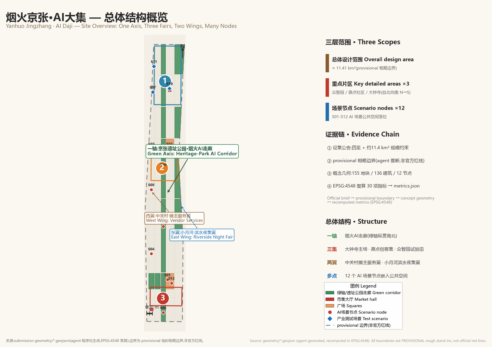
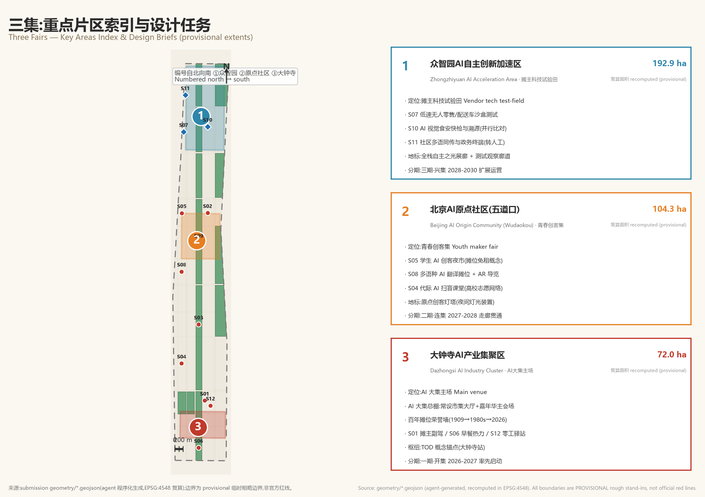
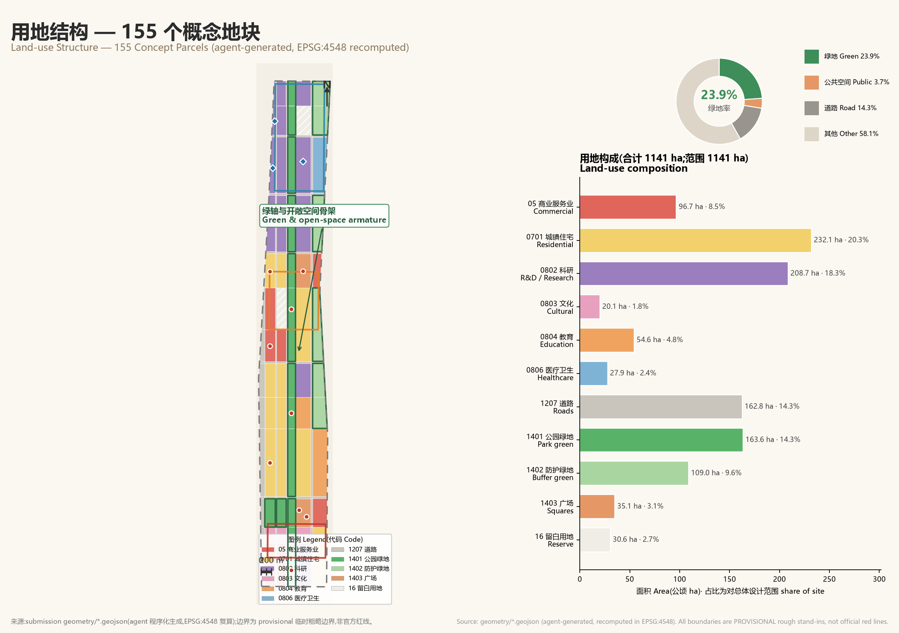
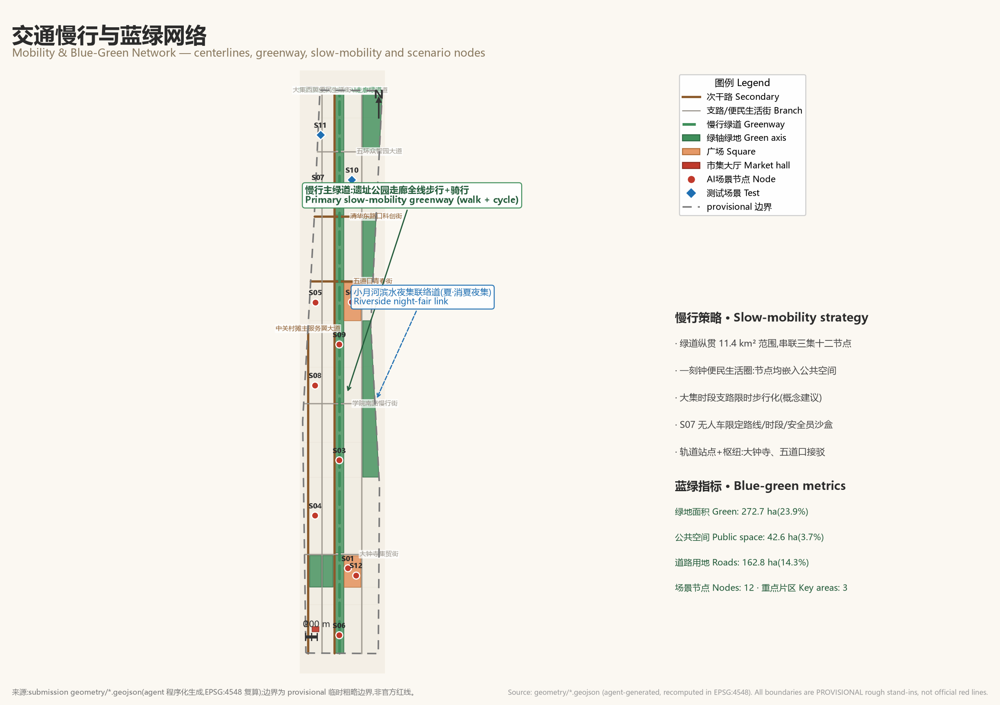
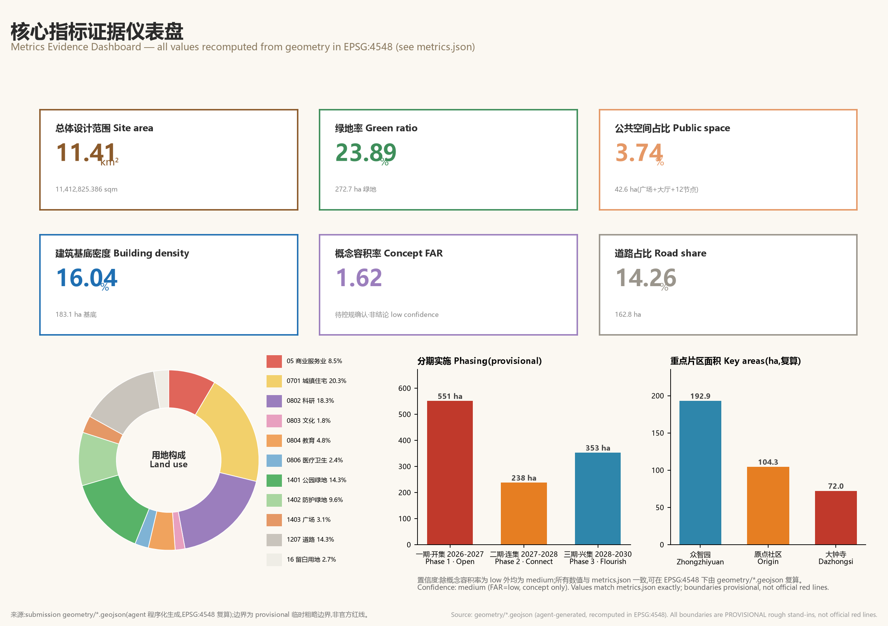

Bringing AI back to street level — serving vendors, seniors, students and neighbours. Rooted in Beijing's fair-going ("gan-ji") culture, AI Daji is the world's first everyday AI fair: AI is not an exhibit, but the abacus in a vendor's hand, a companion at a senior's side, a toy in a student's pocket.
Zhongguancun began not with office towers but with street counters on the 1980s "Electronics Street"; earlier still, the markets and temple fairs that grew around the stations of the 1909 Jingzhang Railway were the corridor's first economy. A century on, AI Daji returns the newest AI to the oldest place of trade and encounter — the fair.
Spatial structure: one axis (Heritage-Park "Everyday AI Corridor") · three fairs (Dazhongsi main venue / Origin youth maker fair / Zhongzhiyuan test-field) · two wings (Zhongguancun vendor-services wing / Xiaoyue River night-fair wing) · many nodes (12 AI scenario nodes).

11.41 km²(11,412,825.386 sqm), a north–south strip paralleling the Jingzhang Railway / Line 13 corridor; provisional stand-in boundary.
Zhongzhiyuan AI Acceleration Area (north, 192.9 ha) · Beijing AI Origin Community (central, 104.3 ha) · Dazhongsi AI Industry Cluster (south, 72.0 ha).
12 AI scenario nodes (S01–S12) sited as small public spaces along the green axis and the three fairs.

Vendor tech test-field: the S07 delivery-robot / S10 food-safety / S11 community-interpreting sandboxes plus the Full-stack Gallery. Recomputed area 192.9 ha.
Youth maker fair: S05 student AI night fair, S08 multilingual translation stalls, S04 inter-generational literacy classes; Origin Maker Lighthouse. Recomputed area 104.3 ha.
AI Daji main venue: the Main Shed (permanent market hall + carnival ground) with the Centennial Stall Honour Wall; S01/S06/S12. Recomputed area 72.0 ha.

| Code | Land-use type | Area (ha) | Share of site |
|---|---|---|---|
| 05 | Commercial services | 96.7 | 8.5% |
| 0701 | Urban residential | 232.1 | 20.3% |
| 0802 | R&D / research | 208.7 | 18.3% |
| 0803 | Cultural | 20.1 | 1.8% |
| 0804 | Education | 54.6 | 4.8% |
| 0806 | Healthcare | 27.9 | 2.4% |
| 1207 | Roads | 162.8 | 14.3% |
| 1401 | Park green | 163.6 | 14.3% |
| 1402 | Buffer green | 109.0 | 9.6% |
| 1403 | Squares | 35.1 | 3.1% |
| 16 | Reserve | 30.6 | 2.7% |
Codes follow the national land-use classification guideline; concept layout only, not a regulatory plan.

Green area 272.7 ha, green ratio 23.9%; the heritage-park corridor's four segments double as heritage display and market-canopy space.
Public space 42.6 ha(3.7% of site): 2 squares + 2 market halls + 12 scenario nodes.
An eastern concept corridor hosting the summer night fair and student maker nights, looped into the slow-mobility greenway.
136 concept buildings, footprint 183.1 ha, density 16.0%; types include R&D, residential, retail, incubator and talent apartments.
Concept gross floor area 1,844 ha, concept FAR 1.62(pending regulatory confirmation — not a conclusion).
Micro-renewal first: keep the street-life fabric, insert market canopies, community stations and edge-computing kiosks; no statutory demolition/retention ratios are claimed.
Twelve scenario cards serve six groups — vendors, seniors, students, international residents, makers and community workers. S07/S10/S11 are industry test-and-verify sandboxes (limited time/space, human review, public test IDs). All scenarios follow data minimisation, anonymisation and human fallback; no facial recognition.
Spatial anchor: Main Shed & all fairs
Spatial anchor: All three fairs
Spatial anchor: Greenway mid · Silver zone
Spatial anchor: Community stations
Spatial anchor: Origin Community
Spatial anchor: Dazhongsi hub
Spatial anchor: Zhongzhiyuan test-field
Spatial anchor: Origin · Main Shed
Spatial anchor: Greenway weekend fair
Spatial anchor: Zhongzhiyuan · Main Shed
Spatial anchor: Zhongzhiyuan stations
Spatial anchor: Dazhongsi · Origin

All values are taken verbatim from metrics.json (recomputed in EPSG:4548); confidence medium (concept FAR low).
“From counter economy to AI Daji” narrative + one-axis/three-fairs/two-wings structure across the 11.41 km² provisional site.
“The fair as test-field”: Zhongzhiyuan hosts the S07/S10/S11 sandboxes; Zhongguancun wing serves vendor finance/legal/supply-chain needs.
12 scenario cards (S01–S12) for vendors, seniors, students, international residents, makers and social workers; data minimisation + human review.
AI Daji Main Shed with the Centennial Stall Honour Wall, Origin Maker Lighthouse, Full-stack Gallery (3+1 landmarks).
Three eras layered: Jingzhang station fairs (1909) → Zhongguancun electronics counters (1980s) → AI Daji (2026–).
Four-season fair calendar, Golden Abacus-Bead Award, open fair API, vendor digital cooperative, developer-in-residence scheme.
Dazhongsi Main Shed + southern corridor + first 3 test scenarios; 551 ha.
Corridor completed + Origin maker fair + riverside night-fair wing; 238 ha.
Zhongzhiyuan test-field expansion + site-wide operation; 353 ha.
Four-season fair calendar (concept): Spring Opening · Summer Night Fair · Autumn Global AI Daji Carnival (Golden Abacus-Bead Award) · Winter Silver-Hair Fair; plus an open fair API, a vendor digital cooperative, a developer-in-residence scheme and open sandbox applications.
Self-check 5/5 passed (self_check.json). Machine validation (visual_review / spatial_review) is authoritative via the repository scripts; this page is fully offline static HTML with no remote resources or scripts.
| Result | Check | Target | Severity |
|---|---|---|---|
| ✓ | BOUNDARY_TRUST | geometry/site_boundary.geojson | major |
| ✓ | KEY_AREAS_TRUST | geometry/key_areas.geojson | major |
| ✓ | LAND_USE_TOPOLOGY | geometry/land_use.geojson | major |
| ✓ | VISUAL_STATIC | visual/index.html | info |
| ✓ | PROFESSIONAL_EVIDENCE | proposal.md | major |
Boundary statement: all spatial boundaries in this proposal are PROVISIONAL rough stand-ins (inferred from the official brief's textual extents and the ~11.4 km² size constraint), not official red lines. Concept geometry is agent-generated; every metric is recomputed from geometry/*.geojson in EPSG:4548 and is offered for professional further study only — no statutory planning conclusions.